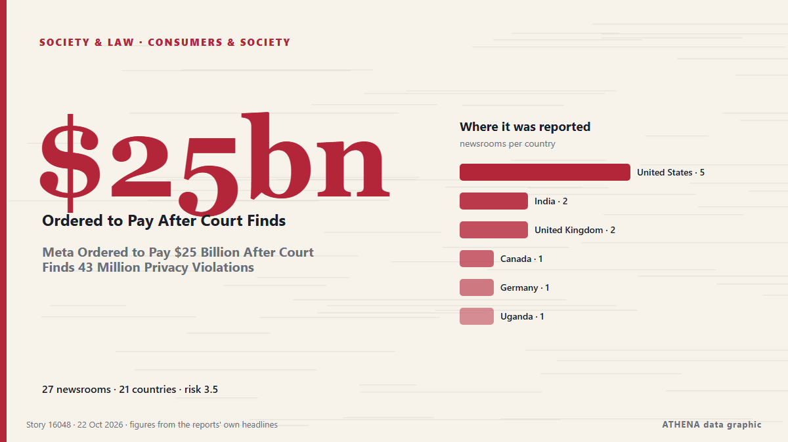

Meta Ordered to Pay $25 Billion After Court Finds 43 Million Privacy Violations

Social media giant Meta was ordered to pay 25 billion in penalties by a New Mexico court on Wednesday as part of a data privacy lawsuit that sprang from the company's Cambridge Analytica data… de The Hacker News
Relayé de façon indépendante par 27 médias dans 21 pays depuis le 21 oct. ; premier à l'annoncer : CBC News ; la couverture faiblit. ATHENA juge le risque modéré (3.5/10), surtout en raison de la gravité des dommages décrits et de sa portée géographique et sectorielle. La confiance est de 86 % (élevée) : 27 médias indépendants le confirment, avec une fiabilité moyenne des sources de 74 %. Qui l'a rapporté : 5 médias en États-Unis · United States, 2 médias en Inde · India, 2 médias en Royaume-Uni · United Kingdom. La couverture s'est étendue de 21 oct. à 22 oct., sur 21 heures.
Pourquoi c'est important: Les changements juridiques et politiques modifient droits, obligations et services publics pour les personnes concernées.
Ce qui a changé : 26 nouveaux articles de 26 rédactions dans les 24 heures jusqu'au 22 oct..
Les titres sont affichés en anglais, tels que publiés.
En un coup d'œil
Sélectionné, noté et rédigé par la méthodologie publiée d'ATHENA. Aucun rédacteur n'intervient sur un événement en particulier. Comment il est produit ›
| 21 Oct 18:51 UTC | 4 |
|---|---|
| 21 Oct 19:51 UTC | 5 |
| 21 Oct 20:51 UTC | 3 |
| 21 Oct 21:51 UTC | 1 |
| 21 Oct 22:51 UTC | 2 |
| 21 Oct 23:51 UTC | 1 |
| 22 Oct 00:51 UTC | 0 |
| 22 Oct 01:51 UTC | 0 |
| 22 Oct 02:51 UTC | 0 |
| 22 Oct 03:51 UTC | 0 |
| 22 Oct 04:51 UTC | 2 |
| 22 Oct 05:51 UTC | 1 |
| 22 Oct 06:51 UTC | 3 |
| 22 Oct 07:51 UTC | 1 |
| 22 Oct 08:51 UTC | 1 |
| 22 Oct 09:51 UTC | 0 |
| 22 Oct 10:51 UTC | 0 |
| 22 Oct 11:51 UTC | 0 |
| 22 Oct 12:51 UTC | 1 |
| 22 Oct 13:51 UTC | 0 |
| 22 Oct 14:51 UTC | 0 |
| 22 Oct 15:51 UTC | 1 |
| 22 Oct 07:05 UTC | 4.0 |
|---|---|
| 22 Oct 07:06 UTC | 4.5 |
| 22 Oct 07:08 UTC | 3.8 |
| 22 Oct 16:12 UTC | 3.5 |
Pourquoi ces chiffres
Importance
Risque
Confiance
La couverture : qui l'a annoncé, et quand
titre tel que publié · ouvre l'original- CBC News · CanadaJudge orders Meta to pay $25B US for misleading consumers about data privacy
- DW English · Allemagne · GermanyMeta ordered to pay $25 billion in Cambridge Analytica case
- TechCrunch · États-Unis · United StatesMeta ordered to pay $25B in case related to Cambridge Analytica scandal
- PBS NewsHour · États-Unis · United StatesMeta must pay New Mexico $25 billion, its biggest fine ever, for deceiving users about Facebook privacy
- CNBC World · États-Unis · United StatesMeta ordered to pay $25 billion penalty in New Mexico Cambridge Analytica case
- Nile Post · Ouganda · UgandaMeta fined $25bn for 'lies' over user data privacy
- Euractiv · Belgique · BelgiumJudge orders Meta to pay $25 bn to New Mexico in Cambridge Analytica case
- The Record (Recorded Future News) · États-Unis · United StatesMeta on the spot for $25 billion under New Mexico privacy ruling
- The Next Web · Pays-Bas · NetherlandsMeta to pay $25B in New Mexico case over misleading Facebook users
- Indian Express · Inde · IndiaMeta ordered to pay New Mexico $25 billion for deceiving users about privacy on Facebook
- France 24 English · FranceMeta fined $25 billion in New Mexico over Cambridge Analytica scandal
- BBC News · Royaume-Uni · United KingdomMeta fined $25bn for 'lies' over user data privacy
- The Straits Times · Singapour · SingaporeMeta ordered to pay historic US$25b penalty to New Mexico for misleading consumers on data privacy
- Guardian Business · Royaume-Uni · United KingdomMeta ordered to pay $25bn to New Mexico in Cambridge Analytica data-privacy case
- MyJoyOnline · GhanaMeta fined $25bn for ‘lies’ over user data privacy
- RTÉ News · Irlande · IrelandMeta ordered to pay $25bn in user data privacy case
- Khaama Press · AfghanistanMeta Hit With Record $25 Billion Fine Over Privacy ‘Lies’
- Cyprus Mail · Chypre · CyprusMeta ordered to pay $25 billion in Facebook privacy case
- Rappler · PhilippinesMeta ordered to pay $25-billion penalty to New Mexico in data privacy case
- Korea Herald · Corée du Sud · South KoreaMeta ordered to pay $25 billion penalty to New Mexico in data privacy case
- China Daily — page reader · Chine · ChinaMETA fined $25 billion for privacy violation
- SecurityWeek · États-Unis · United StatesMeta Ordered to Pay New Mexico $25 Billion for Deceiving Users About Privacy on Facebook
- The Daily Star — page reader · BangladeshJudge orders Meta to pay $25 bn to New Mexico in Cambridge Analytica case
- Al Jazeera English · Qatar‘Facebook’s wrongdoing’: Why has Meta been fined $25bn in New Mexico?
- Egypt Independent · Égypte · EgyptMeta ordered to pay $25 billion in New Mexico case over Cambridge Analytica scandal
- The Hacker News · Inde · IndiaMeta Ordered to Pay $25 Billion After Court Finds 43 Million Privacy Violations